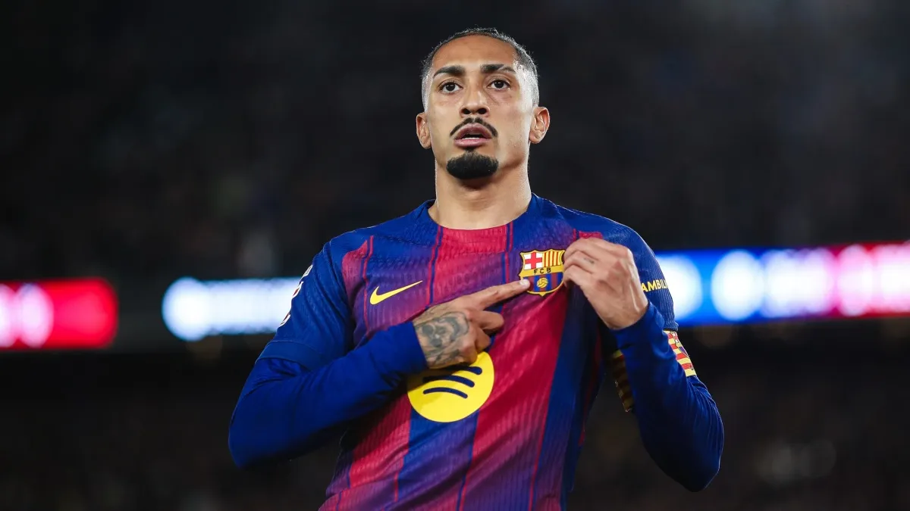
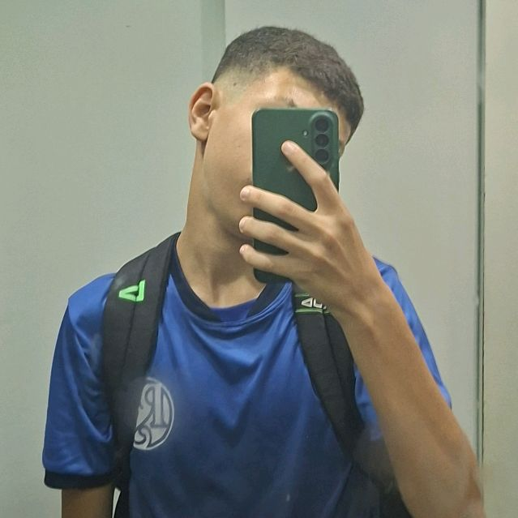

O Barcelona oficializou, na tarde desta sexta-feira (27), a lesão sofrida por Raphinha no amistoso entre Brasil e França. Para iniciar o tratamento, o atleta deixará a delegação nos Estados Unidos e retornará antecipadamente à Espanha. O tempo estimado de recuperação é de cinco semanas. Confira o comunicado:
Comunicado médico ❗
— FC Barcelona (@FCBarcelona_es) March 27, 2026
Raphinha sufre una lesión en el bíceps femoral del muslo derecho según confirman las pruebas médicas que le ha hecho la CBF a raíz de las molestias que notó durante la disputa del Brasil-Francia.
Raphinha vuelve a Barcelona para empezar el tratamiento… pic.twitter.com/zYLMa6ztb3
Durante a partida desta quinta (26), o atacante precisou ser substituído com dores na posterior da coxa. Após a realização de exames médicos realizados pelo departamento médico da Seleção, foi confirmada a lesão no músculo bíceps femoral da coxa direita e a necessidade de afastamento dos gramados.
Patrocinado

Durante a partida desta quinta (26), o atacante precisou ser substituído com dores na posterior da coxa. Após a realização de exames médicos realizados pelo departamento médico da Seleção, foi confirmada a lesão no músculo bíceps femoral da coxa direita e a necessidade de afastamento dos gramados.
Na próxima semana, os catalães disputam o jogo de ida das quartas de final da Champions League. O duelo contra o Atlético de Madrid, será disputado no Camp Nou e transmitido com exclusividade na TNT e na HBO Max , a partir das 14h30 (de Brasília).